FESTIVAIS Pular para seção: Festivais da Primavera(Spring Festivals), Festivais de Verão(Summer Festivals), Festivais de Outono(Fall Festivals), Festivais de Inverno(Winter Festivals) Há muitos festivais em cada estação em Harvest Moon: Back to Nature. Ao participar dos festivais os aldeões gostarão mais de você e você pode ganhar prêmios em certos festivais. Há também muitos festivais romanticos onde você pode melhorar suas amizades com as garotas. Você pode aparecer aos festivais a qualquer momento durante as horas apresentadas. A maioria dos festivais neste jogo acabam as 6:00pm. FESTIVAIS DA PRIMAVERA(SPRING FESTIVALS) 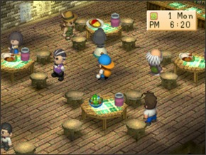 Dia de Ano Novo: dia 1° de Primavera Hora: Entre 6:00pm e 7:50pm Local: A Praça da Cidade(Rose Square) ou a Hospedaria(INN) Você pode escolher se quer ir para a Praça(Rose Square) ou a hospedaria(INN). Você adquirirá +5 de afeto com qualquer um que você fale e +500 de afeto para qualquer garota que você fale. Nada mais do que você faz não tem efeito em nada. 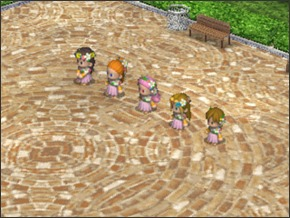 Festival da Deusa: dia 8 de Primavera Hora: 10:00am to 2:50pm Local: A Praça da Cidade(Rose Square) Um dia antes você pode pedir a qualquer garota que tem ao menos 15.000 de afeto para participar do festival com você. Você terá +5 de afeto com qualquer aldeão que você fala e +500 de afeto para qualquer garota que você fala. Se você participa do festival com uma garota e ir para casa sozinho mais tarde você terá +1.000 de afeto com essa garota. Se você concordar em ir com ela para seu lugar preferido mais tarde você terá +3.000 de afeto. 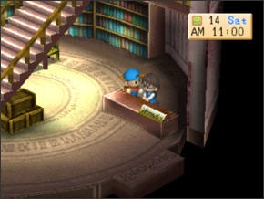 Ação de Graças de Primavera: dia 14 de Primavera Hora: 6:00am a 5:00pm Local: n\a Neste dia você tem que dar as garotas algo doce para comer. Você tera +1.000 de afeto se você der uma sobremesa a uma garota. Você não pode repetidamente dar presentes. Você só pode ter +1.000 de afeto pelo primeiro presente. 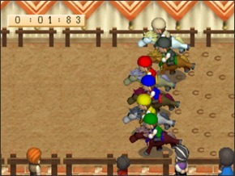 Corrida de Cavalo: dia 18 de Primavera Hora: 10:00am a 2:50pm Local: A Praça da Cidade Há três corridas que você pode assistir e se seu cavalo é um adulto você pode participar na corrida. A stamina mais alta de seu cavalo tiver melhor seu desempenho na corrida Você terá +5 de afeto com qualquer aldeão que você fale. Você terá também +500 de afeto com toda garota que você fala. Você pode falar com todo mundo antes de cada corrida e ter um máximo de +1500 de afeto com os aldeãos e as garotas. Se você participar na corrida e vencer, todos os aldeãos presentes terão +20 de afeto e todas as garotas lá terão +500 de afeto. 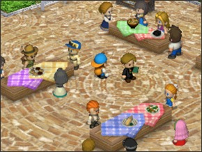 Festival de Culinária: dia 22 de Primavera Hora: 10:00am a 2:50pm Local: A Praça da Cidade Você pode cozinhar qualquer prato que você quiser e traze-lo. Se você trouzer "Chá Relaxante"(Relaxation Tea) você é muito mais que garantido vencer. Você terá mais +5 de afeto com todo aldeão que você falar e +500 de afeto com qualquer garota que você falar. Se você vencer o concurso você terá +20 de afeto com todos os aldeãos ali presentes e +500 com cada garota lá. FESTIVAIS DE VERÃO(SUMMER FESTIVALS) 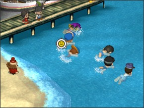 Festival de Natação: dia 1° de Verão Hora: 10:00am a 2:50pm Local: A Praia(Mineral Beach) Você terá mais +5 de afeto com todo aldeão que você falar. Você também terá mais +500 de afeto com qualquer garota que você falar. A primeira vez que você vence este festival você ganhará uma Power Berry. Se você vencer o festival você tera +20 de afeto com todos os aldeãos presentes lá e +500 com todas as garotas lá. Este é provavelmente o minigame mais difícil deste jogo. 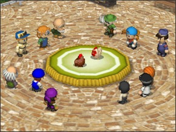 Festival da Galinha: dia 7 de Verão Hora: 10:00am a 2:50pm Local: A Praça da Cidade(Rose Square) Você pode ir e assistir ou no dia antes você pode inscrever uma galinha para o campeonato. Se sua galinha vence o campeonato ela botará ovos de ouro(Gold Egg). Quanto mais coração sua galinha tiver melhor a chance de vencer. Você terá mais +5 de afeto com todo mundo que você fala. Se você vencer tera +20 de afeto com todo aldeão lá. 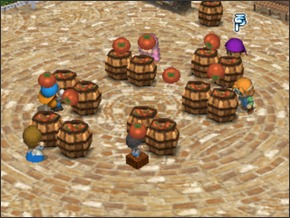 Festival do Tomate: dia 12 de Verão Hora: 10:00am a 2:50pm Local: A Praça da Cidade Você terá +5 de afeto com qualquer aldeão que você fale e +500 de afeto com qualquer garota que você fale. Se sua equipe vence você terá +20 de afeto com cada aldeão e +500 de afeto com cada garota. Você não parece ter nenhuma afeto bonus com a pessoa da equipe que você se juntou. 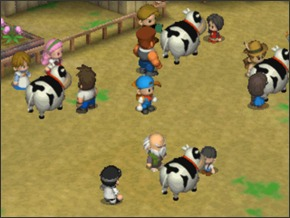 Festival da Vaca: dia 20 de Verão Hora: 10:00am a 2:50pm Local: Ranhco Yodel(Yodel Ranch) Você pode assistir este festival ou inscrever sua prórpia vaca um dia antes. Se sua vaca vence o festival ela dará Leite de Ouro(Gold Milk). Quanto mais coração sua vaca tiver melhor a chance de vencer. Você terá mais +5 de afeto com todo aldeão que você falar e +500 de afeto com qualquer garota que você falar. Se sua vaca ganha você terá +20 de afeto com cada aldeão e +500 de afeto com cada garota. 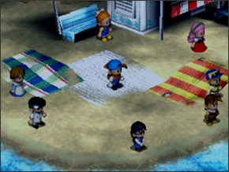 Show de fogos de artifício: dia 24 de Verão Hora: 6:00pm a 7:50pm Local: A Praia(Mineral Beach) Você pode assistir os fogos de artifício com qualquer garota neste jogo ou Kai pode pedir para você assistir com ele. Você terá mais +5 de afeto com todo aldeão que você falar e +500 de afeto com qualquer garota que você falar. Não importa com quem você assista, você não terá pontos de afeto extra com eles. FESTIVAIS DE OUTONO(FALL FESTIVALS) 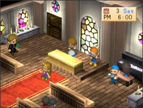 Festival de Música: dia 3 de Outono Hora: 6:00pm a 6:50pm Local: A Igreja(Church) Você também pode aparecer e assistir ou se você concordar em participar um dia antes você tocará a ocarina no espetaculo. Não afetará afeto de ninguém se você escolher participar ou não. Você terá mais +5 de afeto com todo aldeão que você falar e +500 de afeto com qualquer garota que você falar. 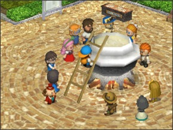 Festival da Colheita: dia 9 de Outono Hora: 10:00am a 2:50pm Local: A Praça da Cidade(Rose Square) Você pode trazer um ingrediente aleatório para a sopa ou não. Realmente não importa o que você traz ou se você traz algo. Você terá mais +5 de afeto com todo aldeão que você falar e +500 de afeto com qualquer garota que você falar. 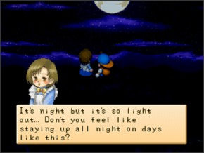 Festival de Exibição da Lua: dia 13 de Outono Hora: 6:00pm a 11:50pm Local: No topo da Montanha Você vai para o topo da montanha e passa o tempo com uma garota que gosta muito de você. Não há efeito na afeto de ninguém. 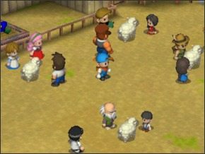 Festival da Ovelha: dia 21 de Outono Hora: 10:00am a 2:50pm Local: Ranhco Yodel(Yodel Ranch) Se você tem uma ovelha neste jogo com uma lã crescida você pode inscrever ela no concurso no dia antes ou você pode apenas comparecer ao festival e assistir. Se sua ovelha ganha o festival ela dará lã de ouro(Gold Wool). Você terá mais +5 de afeto com todo aldeão que você falar e +500 de afeto com qualquer garota que você falar. Se sua ovelha vence então você tem +20 de afeto com cada aldeão e +500 com cada garota lá. FESTIVAIS DE INVERNO(WINTER FESTIVALS) 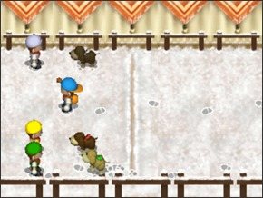 Corrida de Cachorro: dia 10 de Inverno Hora: 10:00am a 2:50pm Local: A Praça da Cidade(Rose Square) Você também pode assistir a corrida ou inscrever seu cachorro. Quanto maior a inteligência do seu cachorro neste jogo melhor a chance dele ganhar. Você terá mais +5 de afeto com todo aldeão que você falar e +500 de afeto com qualquer garota que você falar. Se seu cachorro vence você terá +20 de afeto com todo mundo lá e +500 com qualquer garota que está lá. 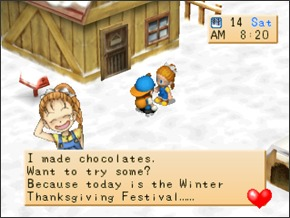 Ações de Graças de Inverno: dia 14 de Inverno Hora: 6:00am, 8:00am, 10:00am, 1:00pm e 3:00pm Local: Na sua Fazenda Qualquer garota que tenha ao menos um coração roxo virá até sua fazenda e vai dar algum tipo de chocolate. Se o coração delas é roxo ou azul você receberá chocolate e se o nível de coração é verde, amarelo, laranja ou rosa você receberá bolo de chocolate. Não há nenhum efeito em níveis de afeto. Festival da Noite Estrelada(Véspera de Natal): dia 24 de Inverno Hora: 6:00pm to 7:50pm Local: Depende da Garota Fale para uma garota nes jogo um dia antes e se ela gosta de você o bastante ela te convidará para um jantar com sua família. Se você é casado o jantar vai ser na sua casa. Não há efeito em níveis de afeto. 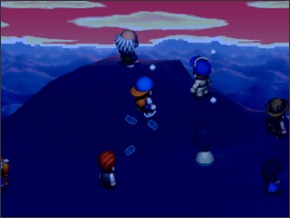 Véspera de Ano Novo: dia 30 de Inverno Hora: 12:00am a 4:50am Local: No Topo da Colina Mãe Você sobe a montanha até o topo da Colina Mãe e assiste o nascer do sol com todos os outros aldeãos. Você terá mais +5 de afeto com todo aldeão que você falar e +500 de afeto com qualquer garota que você falar. Olá! Bem-Vindo!